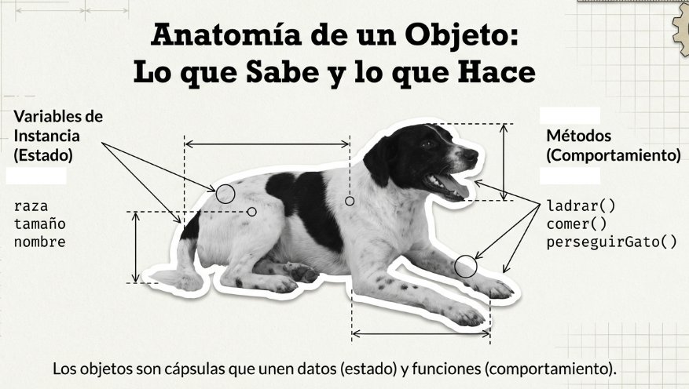

CURSO
Desarrollo con Java
SEMANA 1: FUNDAMENTOS TOTALES
IUJO UPP Barquisimeto
SEMANA 1: FUNDAMENTOS TOTALES
IUJO UPP Barquisimeto
Nacido en 1995: Creado por James Gosling (Sun Microsystems).
Filosofía: "Write Once, Run Anywhere" (Escríbelo una vez, ejecútalo donde sea).
Orientado a Objetos: No solo instrucciones, sino modelos del mundo real.
public class MiPrograma { public static void main(String[] args) { // Mi lógica aquí System.out.println("Hola IUJO"); } }
Clase: El contenedor principal.
Método Main: El punto de entrada obligado.
Sentencias: Terminan siempre con ;
Variable: Espacio en memoria que puede cambiar.
int edad = 20;
Constante: Valor que no cambia (usamos final).
final double PI = 3.1416;

Valores puros en memoria (Stack).
int, double, floatboolean, char, byteTienen métodos y viven en el Heap.
String (El más común)Integer, Double, BooleanSuma
Resta
Mult.
Div.
Residuo
Inc/Dec
Ejemplo: int total = (10 + 5) * 2;
Dado un radio, calcula el área.
final double PI = 3.1416; double radio = 5.0; double area = PI * radio * radio; System.out.println("El área es: " + area);
Convierte una temperatura.
double celsius = 25.0; double fahrenheit = (celsius * 9/5) + 32; System.out.println(celsius + "°C son " + fahrenheit + "°F");
Igual a
Diferente
Mayor que
Menor que
Mayor/Igual
Menor/Igual
Devuelven un boolean (true o false).
&& (AND): Verdadero si AMBOS lo son.
|| (OR): Verdadero si UNO lo es.
! (NOT): Invierte el valor.
(5 > 3) && (2 < 4)
→ true
if (nota >= 10) { System.out.println("Aprobado"); } else { System.out.println("Reprobado"); }
Controla el flujo según una condición lógica.
switch(opcion) { case 1: // Lógica 1 break; case 2: // Lógica 2 break; default: // Opción inválida }
Ideal para menús o múltiples opciones fijas.
int numero = 7; if (numero % 2 == 0) { System.out.println("Es par"); } else { System.out.println("Es impar"); }
int dia = 1; switch(dia) { case 1: System.out.println("Lunes"); break; case 2: System.out.println("Martes"); break; default: System.out.println("Otro día"); }
Se ejecuta mientras la condición sea verdadera.
¡Cuidado con los ciclos infinitos!
while (contador < 10) {
System.out.println(contador);
contador++;
}
A diferencia del while, este ciclo se ejecuta al menos una vez.
do { System.out.println("Esto se ve una vez"); } while (falso);
Estructura: for(inicio; fin; incremento)
for (int i = 0; i < 5; i++) { System.out.println("Vuelta: " + i); }
Diseñado para recorrer arreglos o colecciones de forma segura.
No requiere un índice manual.
for (String n : nombres) {
System.out.println(n);
}
Procedimiento: Realiza una acción pero no devuelve nada (void).
Función: Realiza un cálculo y retorna un valor.
static int sumar(int a, int b) { return a + b; }
Crea un programa que simule un cajero. Debe tener un saldo inicial. Usa un ciclo para mostrar un menú:
Usa: variables, switch, if-else y un ciclo while.
Crea un programa que pida al usuario 3 notas. Debe calcular el promedio y determinar, usando una estructura if-else, si el estudiante aprueba o reprueba.
Usa: variables, Scanner, operadores aritméticos e if-else.
import java.util.Scanner; public class CajeroApp { public static void main(String[] args) { Scanner sc = new Scanner(System.in); double saldo = 1000.0; int opcion = 0; while (opcion != 3) { System.out.println("\n--- CAJERO IUJO ---\n1. Ver Saldo\n2. Retirar\n3. Salir"); opcion = sc.nextInt(); switch(opcion) { case 1: System.out.println("Su saldo es: $" + saldo); break; case 2: System.out.print("Monto a retirar: "); double retiro = sc.nextDouble(); if(retiro <= saldo) { saldo -= retiro; System.out.println("Éxito!"); } else { System.out.println("Fondos insuficientes."); } break; case 3: System.out.println("Gracias por usar el sistema."); break; } } } }
Estructura base
Variables/Tipos
Operadores
If / Switch
Loops
Funciones
¡Gracias por su atención, futuros desarrolladores!